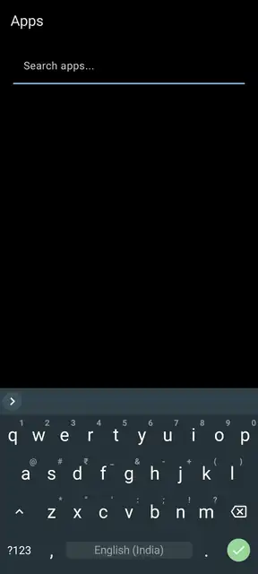

CClauncher
أدوات النظام
CCLauncher is a minimalist Android launcher designed to help reduce screen time and distractions due to all the apps present (like social media apps for example). Unlike traditional launchers, apps are hidden by default. Key Features: - Apps invisible by default (type to search) - Digital wellbeing
✓ ترخيص مفتوح (GPL-3.0-only) · آخر تحديث: 2026-11-06
v10.7.20الإصدار
3.8 MBالحجم
GPL-3.0-onlyالرخصة
Open in Kanzتحميل APK (3.8 MB)
Download APK
SHA-256: 26c02047aaaaa84ab51882244d6d0fe28b4869999db781f18ddca9182bf5986d

امسح الكود لفتح صفحة التطبيق
Scan to open this app page
لو كنز مش متثبت عندك: نزّل متجر كنز.
Not installed? Get the Kanz store.